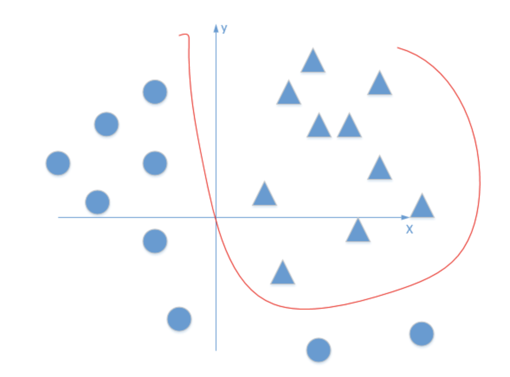

Todo
Batch Normalization
背景
由于下层的Layer的参数发生改变，导致上层的输入的分布发生改变，最后深度神经网络难以训练。（注意：底层为最下层）
- Internal Covariate Shift (内部协变量偏移): 在深层网络训练的过程中，由于网络中参数变化而引起内部结点数据分布发生变化的这一过程
- Internal Covariate Shift 带来的问题
- 上层网络需要不停调整来适应输入数据分布的变化，导致网络学习速度的降低
- 网络的训练过程容易陷入梯度饱和区，减缓网络收敛速度
Batch Normalization
- 算法流程图

($\epsilon$是为了增加训练稳定性而加入的小的常量数据) 测试阶段如何使用Batch Normalization？
- BN在每一层计算的$\mu$与$\sigma^2$都是基于当前batch中的训练数据，但是这就带来了一个问题：在预测阶段，有可能只需要预测一个样本或很少的样本，没有像训练样本中那么多的数据，此时$\mu$与$\sigma^2$的计算一定是有偏估计，这个时候该如何进行计算？
- 利用BN训练好模型后，我们保留了每组mini-batch训练数据在网络中每一层的$\mu{batch}$与$\sigma^2{batch}$。此时我们使用整个样本的统计量来对Test数据进行归一化，具体来说使用均值与方差的无偏估计：
- 得到每个特征的均值与方差的无偏估计后，我们对test数据采用同样的normalization方法：
batch_normalization做了normalization后为什么要变回来？即 scale and shift
如果只做normalize在某些情况下会出现问题，比如对象是Sigmoid函数的output，而且output是分布在Sigmoid函数的两侧，normalize会强制把output分布在Sigmoid函数的中间的非饱和区域，这样会导致这层网络所学习到的特征分布被normalize破坏。而上面算法的最后一步，scale and shift可以令零均值单位方差的分布（normalize之后的分布）通过调节$\gamma$和$\beta$变成任意更好的分布（对于喂给下一层网络来说）。因为这个$\gamma$和$\beta$是在训练过程中可以学习得到参数。
BN的优势
- BN使得网络中每层输入数据的分布相对稳定，加速模型学习速度
- BN允许网络使用饱和性激活函数（例如sigmoid，tanh等），缓解梯度消失问题
- BN使得模型对网络中的参数不那么敏感，简化调参过程，使得网络学习更加稳定
- BN具有一定的正则化效果
在Batch Normalization中，由于我们使用mini-batch的均值与方差作为对整体训练样本均值与方差的估计，尽管每一个batch中的数据都是从总体样本中抽样得到，但不同mini-batch的均值与方差会有所不同，这就为网络的学习过程中增加了随机噪音，与Dropout通过关闭神经元给网络训练带来噪音类似，在一定程度上对模型起到了正则化的效果。
BN的缺陷
- 不适用于mini-batch非常小的训练环境
- 不适用于RNN，因为它是一个动态的网络结构，同一个batch中训练实例有长有短，导致每一个时间步长必须维持各自的统计量，这使得BN并不能正确的使用。
参考
TF-IDF及TextRank
1. TF-IDF
- TF
- TF是词频(TF，Term Frequency): 词频（TF）表示词条（关键字）在文本中出现的频率。
- IDF
- IDF是逆向文件频率 (IDF，Inverse Document Frequency): 某一特定词语的IDF，可以由总文件数目除以包含该词语的文件的数目，再将得到的商取对数得到。如果包含词条t的文档越少, IDF越大，则说明词条具有很好的类别区分能力。
- TF-IDF
- TF-IDF实际上是 $TF * IDF$ 。某一特定文件内的高词语频率，以及该词语在整个文件集合中的低文件频率，可以产生出高权重的TF-IDF。因此，TF-IDF倾向于过滤掉常见的词语，保留重要的词语。
2. TextRank
- 基于词语词之间的共现性构建无向图。
参考jieba源码分析之关键字提取(TF-IDF/TextRank)
激活函数
1.激活函数的理解
解决线形模型 y = wx + b 的弊端，线形分类模型的分界地方都是平面或者超平面，无法解决具有非线形模型特征的数据。如果没有激励函数，在这种情况下你每一层节点的输入都是上层输出的线性函数，无论你神经网络有多少层，输出都是输入的线性组合，相当于没有隐藏层，网络的学习能力有限。

形象的解释神经网络激活函数的作用是什么？
常见激活函数，及其优缺点 - 面试篇
2. Sigmoid
- 数学形式

- 导数形式

- 特点
- Sigmoid 函数的取值范围在 (0,1) 之间，单调连续，求导容易，一般用于二分类神经网络的输出层。特别的，如果是非常大的负数，那么输出就是0；如果是非常大的正数，输出就是1。
- 缺点
- 如果我们初始化神经网络的权值为 $[0,1]$ 之间的随机值，由反向传播算法的数学推导可知，梯度从后向前传播时，每传递一层梯度值都会减小为原来的0.25倍，如果神经网络隐层特别多，那么梯度在穿过多层后将变得非常小接近于0，即出现梯度消失现象；当网络权值初始化为 $(1,+∞)$ 区间内的值，则会出现梯度爆炸情况。梯度消失更容易产生。
- 其解析式中含有幂运算，计算机求解时相对来讲比较耗时。对于规模比较大的深度网络，这会较大地增加训练时间。
- Sigmoid 的 output 不是0均值（即zero-centered）。这是不可取的，这个特性会导致为在后面神经网络的高层处理中收到不是零中心的数据。这将导致梯度下降时的晃动，因为如果数据到了神经元永远时正数时，反向传播时权值w就会全为正数或者负数。
3. tanh
- 数学形式

- 导数形式

- 特点
- 解决了Sigmoid函数的不是zero-centered输出问题，然而，梯度消失（gradient vanishing）的问题和幂运算的问题仍然存在。
4. Relu
- 数学形式

- 导数形式
- 优点
- 解决了梯度消失问题
- 计算速度非常快，只需要判断输入是否大于0
- 收敛速度远快于sigmoid
- 缺点
- 输出不是zero-centered
- 原点不可导
- Dead ReLU Problem，指的是某些神经元可能永远不会被激活，导致相应的参数永远不能被更新。有两个主要原因可能导致这种情况产生: (1) 非常不幸的参数初始化，这种情况比较少见。例如w初始化全部为一些负数。 (2) learning rate太高导致在训练过程中参数更新太大，不幸使网络进入这种状态。解决方法是可以采用Xavier初始化方法，以及避免将learning rate设置太大或使用adagrad等自动调节learning rate的算法。
- leaky relu函数，$f(x)=max(αx,x)$ , 比如取α=0.01\alpha=0.01α=0.01，可以改善relu中x<0部分的dead问题。
5. 如何选择合适的激活函数
- 首选 ReLU，速度快，但是要注意学习速率的调整，
- 如果 ReLU 效果欠佳,尝试使用 Leaky ReLU 变种。
- 可以尝试使用 tanh。
- Sigmoid 和 tanh 在 RNN（LSTM、注意力机制等）结构中有所应用，作为门控或者概率值。其它情况下，减少 Sigmoid 的使用。
- 在浅层神经网络中，选择使用哪种激励函数影响不大。
手推LR
1. 假说
假设样本的标签为0和1， h(x) 为取得预测为标签1的概率。
2. 后验概率
3. 似然函数
N 为数据样本数
4. 对数似然
5. 损失函数
似然函数乘以 -1/N
6. 梯度下降
Loss 如下：
参数更新如下：
7. 一些问题
LR为什么是线性模型？
Logistic Regression从几率的概念构建线性回归模型。一个事件发生的几率（odds）为该事件发生的概率与不发生概率的比值，几率的取值范围为$[0,+\infty)$，其对数的取值范围为实数域，所以，可以将对数几率作为因变量构建线性回归模型: $log\frac{p}{1-p} = w^Tx$, 由此可得 $p = \frac{1}{1+e^{-w^Tx}}$。这便是Logistic Regression采用sigmoid函数的原因，sigmoid函数将自变量的线性组合映射到（0,1），用以表述分类的概率特性。从sigmoid函数看出，当$w^Tx >0 $ 时，y=1，否则 y=0。$w^Tx=0$ 是模型隐含的分类平面（在高维空间中，我们说是超平面）, 所以说逻辑回归本质上是一个线性模型。为什么逻辑回归比线性回归要好？
逻辑回归能够用于分类，不过其本质还是线性回归。它仅在线性回归的基础上，在特征到结果的映射中加入了一层sigmoid函数（非线性）映射，即先把特征线性求和，然后使用sigmoid函数来预测。sigmoid函数
- 优点：
- Sigmoid函数的输出映射在(0,1)之间，单调连续，输出范围有限，优化稳定，可以用作输出层。
- 求导简单。
- 缺点：
- 由于其软饱和性，容易产生梯度消失，导致训练出现问题。
- 优点：
- LR 如何解决多分类问题？
如果y不是在[0,1]中取值，而是在K个类别中取值，这时问题就变为一个多分类问题。有两种方式可以出处理该类问题：一种是我们对每个类别训练一个二元分类器（One-vs-all），当K个类别不是互斥的时候，比如用户会购买哪种品类，这种方法是合适的。如果K个类别是互斥的，即 y=i 的时候意味着 y 不能取其他的值，比如用户的年龄段，这种情况下 Softmax 回归更合适一些。Softmax 回归是直接对逻辑回归在多分类的推广，相应的模型也可以叫做多元逻辑回归（Multinomial Logistic Regression）, 模型通过 softmax 函数来对概率建模。
参考
过拟合及其解决方法
1. 过拟合概念
在深度学习或机器学习过程中，在训练集上表现过于优越，在验证集及测试集中表现不佳，模型泛化能力差。
过拟合及常见处理办法整理
2. 常见原因
原因主要是数据样本少及噪声多
- 数据样本少
- 数据噪声多
- 模型复杂度高
- 迭代次数多
3. 解决方法
- 获取更多的数据
- 数据源获取更多的数据
- 数据增强
- 更改模型结构
- 换简单模型
- L1 & L2 范式
- Dropout
- Early Stopping
4. 数据增强
自然语言处理技术中常用的数据增强方法
- 同义词替换
- 随机插入
- 随机交换
- 随机删除
5. L1 & L2 范式
- 范式定义
- 加入范式的目标函数
- L1范式惩罚因子
- L2范式惩罚因子
- 结论
L1 正则化用作特征选择，L2 正则化用作防止过拟合
参考介绍—-机器学习中的正则化
6. Dropout
训练阶段，对每一个神经元的输出以keep_prob保留，1-keep_prob置为0；
预测阶段，对每一个神经元的输出乘以keep_prob。
参考介绍—-深度学习中Dropout原理解析